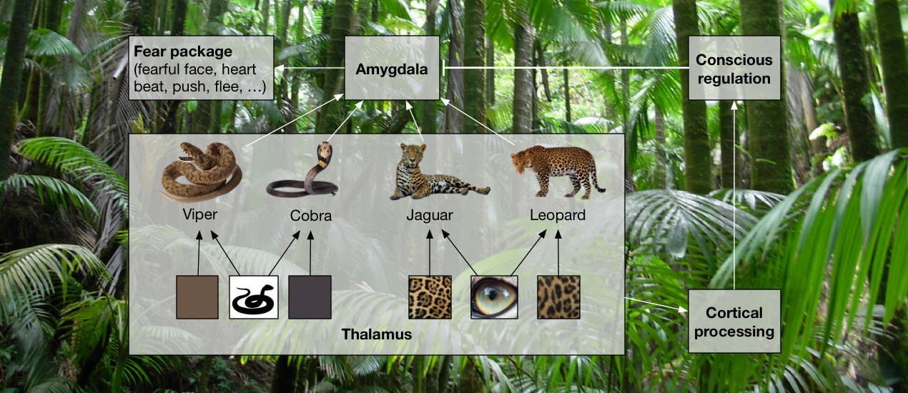

Introduction to Evolutionary Psychology

Evolutionary psychology is an approach to understand human behavior that combines insights gained from evolutionary biology, the computational sciences and the study of ancestral living conditions. It has been put forward as an opposing view to what Tooby and Cosmides (1992) call the Standard Social Science Model (SSSM), which has dominated the social and behavioral sciences throughout most of the 20th century. According to the SSSM, the mental organization of adult human beings is not caused by human nature. Rather, humans acquire their mental organization almost entirely from their sociocultural and physical environment. Human beings, on this view, only have a minimal amount of innate impoverished drives (like hunger, thirst, sexual motivation, etc.) and, independently of these, a capacity to be socialized through learning.
A prominent argument given in favor of the SSSM is the fact that genetically determined behavior might be maladaptive due to changing environmental conditions, and therefore the mind evolved towards general-purpose and domain-general learning systems. On this view, the phenotype’s behavior is plastic and tailored toward maximizing individual fitness under changing environmental circumstances. The selective pressures of ancestral environments gave rise to this plasticity, but the concrete adaptive problems that have been faced in these environments play only a minor role in explaining the behavior of modern humans. This is the reason why many social scientists study human behavior in modern conditions more or less independently from their evolutionary history.
Evolutionary psychology, in contrast, holds that psychological mechanisms are evolved adaptations to ancestral adaptive problems. An analogy is drawn here between organs in the body and “cognitive programs” or “mental organs”: Analogous to how organs in the body evolved to solve a particular adaptive problem, e.g. digesting food, cognitive programs evolved to solve a particular adaptive information processing problem, e.g. predator/prey distinction, kin detection, language, etc.
In the following, we will break down the individual tenets of evolutionary psychology and review the arguments that are given in support of these tenets. Since not all tenets are shared by all evolutionary psychologists, we will focus here on the formulation given by Cosmides and Tooby (1987) and Tooby and Cosmides (2005). The tenets are not listed explicitly, but can be reconstructed implicitly from these texts. I will go through each tenet in turn and present a reconstruction of the arguments that motivate these tenets.
Tenet 1: The brain evolved to be a computer that solves information processing problems.
This tenet is motivated as follows: Environments pose adaptive information processing problems to organisms. Hence, the genes of organisms that successfully solve these information processing problems spread in the gene pool and such organisms are, by definition, computers.
This tenet, Tooby and Cosmides (2005, p. 31) argue, is shared by proponents of the SSSM. Even a domain-general learning mechanism would be an innate information processing mechanism that evolved at some point to solve adaptive problems. For example, operant conditioning presupposes an innate mechanism to alter the probability of behaviors based on their intrinsically reinforcing consequences (like food or pain). Similarly, classical conditioning presupposes innate unconditioned stimuli and a method to calculate contingencies. Consequently, Tooby and Cosmides (2005, p. 32) conclude that “learning is not an alternative explanation to the claim that natural selection shaped the behavior” and that “a behavior can be, at one and the same time, cultural, learned, and evolved”. This means that the commonly perceived controversy between innateness/evolvedness on the one hand and learnedness on the other is based on a false dichotomy. Rather, it is proposed, evolution created programs as learning mechanisms, and these mechanisms are a prerequisite for learning to be able to occur. The disagreement between the SSSM and evolutionary psychology, therefore, only regards the structure of the evolved learning mechanisms, not the question whether such learning mechanisms evolved at all.
When we accept the theory of evolution through natural selection, it arguably becomes theoretically impossible to deny that the brain evolved to be a computer that solves adaptive information processing problems – unless we claim that (A) evolution hasn’t found this path yet, (B) evolution cannot find this path in principle since it would lead through a fitness valley or (C) adaptive problems aren’t information processing problems and therefore a computer would not be the ideal solution. Discussing these possibilities would be beyond the scope of this introduction, so I am going to suppose (A), (B) and (C) to be false for the rest of this discussion. This leads us to accept this tenet.
Tenet 2: The brain is not a “blank slate” domain-general fitness-maximizing machine.
Cosmides and Tooby (1987, p. 47) and Tooby and Cosmides (2005, pp. 294- 299) argue that there is no domain-general success criterion that is correlated with fitness and, therefore, a domain-general mechanism would not be successful at actually maximizing fitness and could therefore not have evolved. This argument can be summarized as follows: If no domain-specific innate knowledge is present in the organism, then it can only acquire knowledge that can be inferred from perceptual inputs, without relying on innate perceptual heuristics. Similarly, it can learn behaviors only through trial and error learning, which would amount to generating random sequences of actions, observing the fitness outcome (e.g. the number of produced offspring) and then reinforcing or mitigating behaviors based on this outcome. Proposing instead that the mechanism could rely on perceptual cues like smell or taste as a proxy for expected fitness, they argue, amounts to “admitting domain-specific innate knowledge”.
However, when observing a certain positive or negative fitness outcome (like an increase or decrease in the produced offspring), it is virtually impossible to trace it back to the precise actions or sequences of actions that caused it, since virtually any action taken before in the organism’s life could have caused it. Furthermore, whether a sequence of action promotes fitness is highly context-sensitive. Thus, due to the resulting combinatorial explosion, behaviors cannot reliably be reinforced or mitigated and behavior stays more or less random. Therefore, an organism with adequate innate domain-specific knowledge, perceptual heuristics and perception-action patterns would have a fitness advantage over an organism that only has a domain-general fitness-maximizing mechanism, consequently triggering selection for organisms with these traits.
Tenet 3: The brain executes innate, domain-specific, functionally isolable cognitive programs that generate particular behaviors in response to particular external or internal informational inputs. Most or even all of these programs evolved as a response to a particular adaptive information processing problem.
It should be noted that it is not claimed that all cognitive programs generate behavior deterministically based on the current perceptual input. Rather, some of these programs exhibit what is commonly called experience-dependent plasticity: They are able to learn based on the input they receive throughout the organism’s development (Cosmides and Tooby, 1987, p. 284). For example, the language program learns to acquire the language of a person’s surrounding community. The programs, therefore, did not evolve to produce a certain kind of behavior, but they evolved to produce a mapping from current inputs and the sequence of inputs they received throughout development to behaviors. Different programs have different degrees of experience-dependent plasticity, depending on the fitness advantage that plasticity would provide over genetic determinism in the program’s adaptive domain.
In a similar fashion, programs are experience-expectant: They evolved to be able to develop only if they receive certain informational inputs at critical periods throughout development (Tooby and Cosmides, 2005, p. 34-35). This entails that a program’s innateness does not mean that it is present at birth – much like teeth are innate but not present at birth. Rather, a cognitive program can develop at any point in an organism’s life, depending on whether it is relevant at that point in life and whether the developmentally relevant informational inputs have been received. Tooby and Cosmides (2005, p. 35) stress that this developmentally relevant information consists not only of contingencies in physical laws and the behavior of other organisms, but also of the physical and cultural environment. The latter comprise a second inheritance system that co-evolves with the genes, and changes in these environments can lead to significant alterations in the operation of the cognitive programs, or even a failure of certain cognitive programs to develop.
It should also be noted that it is not claimed that the cognitive programs can only generate behavior according to their original adaptive function. For example, the language program, which arose as an adaptation for spoken language, can learn to acquire reading and writing (Tooby and Cosmides, 2005, p. 26). The ability to learn reading and writing is not an adaptation but a by-product of the adaptation for spoken language.
However, it is claimed that the perception-behavior relations humans can learn are constrained or patterned by the structure of their innate cognitive programs. Hence, humans are not able to learn to perform arbitrary tasks. Rather, they are able to learn a task only if either a cognitive program to tackle this type of task arose as an adaptation, or the ability to solve this task is a by-product of some cognitive program that arose for some similar adaptive problem (as in the case of reading and writing). This is arguably the strongest and most vigorously debated entailment of evolutionary psychology, since it is at stark contrast with the SSSM, which posits a domain-general learning mechanism.
To make Tenet 3 more vivid, consider an example: the adaptive problem of avoiding inbreeding. Inbreeding is more disastrous the more related the inbreeding mates are. As argued under Tenet 2, a domain-general fitness-maximizing mechanism could not learn the relation between defective offspring and sex with relatives. Hence, Lieberman, Tooby, and Cosmides (2003) propose that humans evolved a kin detection program as a response to the evolutionary recurrent statistical relationship between inbreeding and reduced fitness. This program, they propose, combines various cues, like duration of coresidence during childhood, the degree to which one’s own mother cared for the person in question, olfactory signature, etc. to compute an estimate of the degree of relatedness to a person. This estimate is not computed everytime one encounters a person, but rather it is learned over time and stored. It is then fed into another program – the program that computes the sexual attractiveness of an individual. The higher the degree of relatedness, the lower the sexual attractiveness of that individual should be. This proposed incest avoidance program was tested by conducting a study in which participants were asked about the amount of time they spent with siblings during childhood, and the degree of aversion that they feel during imagination of sexual intercourse. As predicted by positing an inbreeding avoidance program, the study found a significant correlation between the period of childhood coresidence and the degree of sexual aversion (Lieberman, Tooby, and Cosmides, 2003, p. 27).
While the argument for Tenet 2 should lead us to accept that the mind must have some sort of innate domain-specific knowledge, it does not actually show that this must be manifested in the form of a large collection of functionally isolable programs that are domain-specific and correspond to particular adaptive information processing problems. Tenet 3, as it stands, is therefore not backed by the theoretical arguments that are given in favor of Tenet 2 – even though Cosmides and Tooby (1987) and Tooby and Cosmides (2005) take it to be that way. This conclusion is based on a false dichotomy between the extreme form of a domain-general fitness-maximizing mechanism, or “blank slate”, described in Tenet 2 and the view described in Tenet 3. Since this dichotomy does not exist, arguments against the blank slate view are not arguments in favor of Tenet 3.
Apart from theoretical considerations, other arguments given in favor of this tenet are empirical observations. If a proposed cognitive program predicts certain behaviors that are empirically found to be present, this is taken to be evidence in support of the existence of the proposed cognitive program. However, as with all of science, just because a certain theory is consistent with an observation, this does not verify the proposed theory – it only doesn’t falsify it (Popper, 2005). In an upcoming article, I will construct another model that accounts for the empirical observations taken as evidence for evolutionary psychology without actually positing functionally isolable cognitive programs and while maintaining a domain-general learning mechanism.
Tenet 4: The human psyche consists almost entirely of cognitive programs which developed in hunter-gatherer societies.
As Tooby and Cosmides (2005, p. 56 f.) point out, most of the uniquely human evolution took place in ancestral hunter-gatherer societies, and natural selection acts too slowly to have adapted to post-hunter-gatherer conditions.
Tenet 5: The functional architecture of all members of a species substantially overlaps. In particular, all human beings share the same functional architecture – i.e. collection of programs.
Tooby and Cosmides (2005, pp. 36-39) argue that, since the genetic makeup of offspring is basically a random mixture of the genetic makeup of the mother and father, the genetic makeup of both parents has to code for a universal functional architecture – otherwise, the programs cannot function in concert in the offspring. The observed variation between individuals and races can therefore not be explained by differences in the overall functional architecture, but rather by genetic variations that tune quantitative parameters, adaptations that can be coded for by single genes or programs that can be activated or deactivated by single genes. Another source of variation are different perceptual inputs throughout development. These can cause some of the programs to learn different behaviors. However, these behavioral changes are limited by the degree of plasticity allowed for by the programs.
Tenet 6: Learning, attention, memory and reasoning are not unified phenomena but category-based.
Tooby and Cosmides (2005, pp. 42-44) suggest that behavior with respect to certain object categories has computational requirements that are functionally incompatible with the demands for other categories. For example, snakes have been a dangerous, recurring predator throughout human evolutionary history and reacting to snakes requires a speed of processing and particular behavioral response packages that would be incompatible with the responses for other categories. Consequently, behavior with respect to snakes should be generated by some other system than, e.g., behavior with respect to humans.
Similarly, reasoning with respect to social relations can include methods of inference that would be invalid in content-free reasoning. They give the following example: “If you take the benefit, then you are obligated to satisfy the requirement” implies “If you satisfy the requirement, then you are entitled to take the benefit” (Tooby and Cosmides, 2005, p. 46). This is an inference of the form (P → Q) → (Q → P) that would be invalid in a domain-general logic. Hence, they argue that domain-specific reasoning systems would allow the organism to draw inferences that would be impossible using a domain-general reasoning system. This, in turn, improves the organism’s fitness, which results in selection for domain-specific reasoning systems.
These and similar considerations lead them to propose that attention systems, reasoning systems, learning systems and memory systems are category-based, i.e., they are not uniform systems but exist as separate cognitive programs for different object categories (e.g., for animals, humans and artifacts). Their unification, they claim, is a relict of folk psychology that ought to be eliminated from scientific psychology (Tooby and Cosmides, 2005, p. 45).
Tenet 7: Emotions are adaptations that arose for adaptive problems that required orchestration of mechanisms that would otherwise have been uncoordinated.
Since the mind is a collection of programs that generate different behaviors and could mutually interfere with each other, mechanism orchestration in particular evolutionary recurrent situations (e.g. being attacked by a predator) is an adaptive problem, and emotion programs evolved as a solution to this adaptive problem (Tooby and Cosmides, 2005, pp. 52-61). These emotion programs (e.g., fear) involve activating subprograms in a concerted way for solving the particular adaptive problem in question (e.g., activating an action package consisting of flight behavior, physiological changes, a fearful facial expression, screaming, etc.) while deactivating possibly interfering other programs (e.g., hunger).
Given these tenets, Tooby and Cosmides (2005) propose that the field of psychology ought to be a form of reverse engineering of the cognitive programs. This approach can be broken down as follows: First, gather knowledge about ancestral living conditions and environments from fields like paleoanthropology, hunter-gatherer archaeology and studies of living hunter-gatherer societies. These insights can be combined with evolutionary theory to determine the adaptive problems faced in these environments, i.e., the problems that, when solved, would lead to higher evolutionary fitness. From these adaptive problems, specifications of the computational requirements that these adaptive problems pose can be constructed. Given these specifications, models for cognitive programs that comply with these specifications can be developed – i.e., that manage to solve the adaptive problem in question. Alternatively, instead of starting the process by figuring out adaptive problems, one could start by observing behaviors of organisms and work backward to hypothesize a cognitive program that could give rise to this behavior. Finally, the hypothesized cognitive programs can be evaluated for coherence and consistency with previous or novel experimental observations from the cognitive, social and cultural sciences: Either, behavioral predictions of the hypothesized programs can be matched against cross-cultural behavioral observations, or design features of the programs can be identified in brains.
As I have alluded to already, the theoretical arguments that we have reviewed should only lead us to accept Tenets 1 and 2. All the other tenets posit discrete, functionally isolable cognitive programs that correspond to distinct adaptive problems. While Tooby and Cosmides take their argument against the domain-general fitness-maximizing mechanism to be an argument in favor of cognitive programs, I will argue in an upcoming article that this is not actually so. In particular, I will argue for two theses: (A) We can posit a domain-general learning mechanism while maintaining domain-specific innate knowledge. (B) We can posit domain-specific innate knowledge without positing cognitive programs under any fruitful definition of this term.
Bibliography
Cosmides, Leda and John Tooby (1987). “From evolution to behavior: Evolutionary psychology as the missing link”. In: The latest on the best: Essays on evolution and optimality. The MIT Press.
Lieberman, Debra, John Tooby, and Leda Cosmides (2003). “The evolution of human incest avoidance mechanisms: an evolutionary psychological approach”. In: Evolution and the moral emotions: appreciating Edward Westermarck. Citeseer.
Popper, Karl (2005). The logic of scientific discovery. Routledge.
Tooby, John and Leda Cosmides (1992). “The psychological foundations of culture”. In: The adapted mind: Evolutionary psychology and the generation of culture. Oxford University Press.
Tooby, John and Leda Cosmides (2005). “Conceptual foundations of evolutionary psychology”. In: The handbook of evolutionary psychology. John Wiley & Sons.